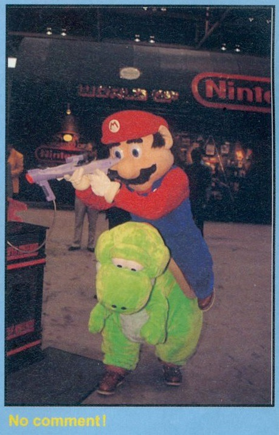
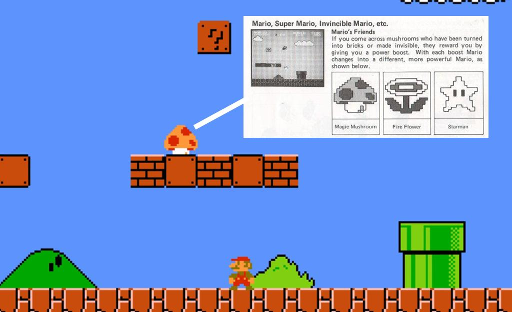
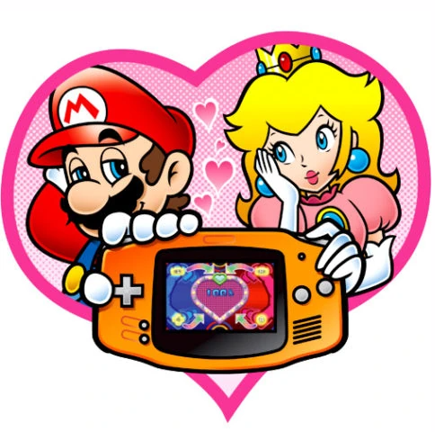
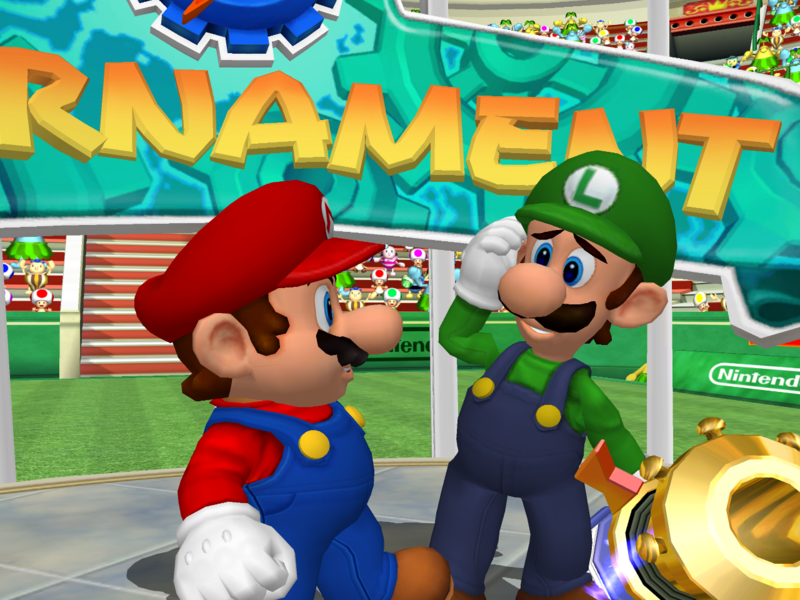
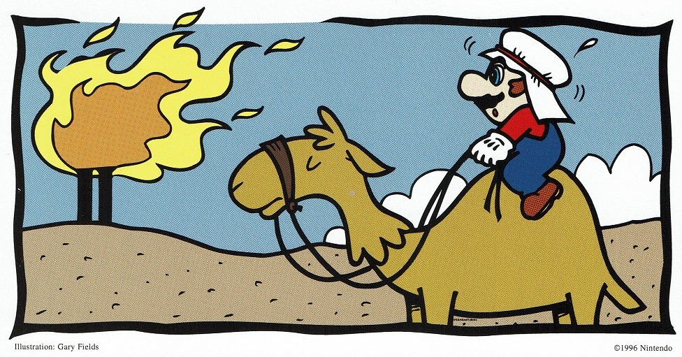
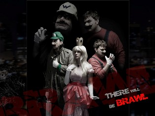
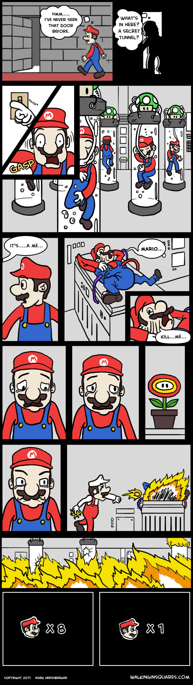

Things might get a little dicey here, but it's worth it!
A collection of Mario Oddity articles, small enough to share one web page. Enjoy.
Yoshi games (that aren’t Yoshi’s Island) sort of get the short end of the stick when it comes to memorable Mario games. They attempt weird things and just get of forgotten. It's a shame that include Yoshi’s Safari, known as Yoshi’s Road Hunting in Japan. Released in 1993 for the SNES, it’s an on rails shooter where you ride Yoshi through Jewelry Land on a quest to assist King Fret and Prince Pine. You get to unleash a fury of super scope pellets on Goombas, Koopas, and even Koopalings in locations that look suspiciously like Super Mario World but aren’t.
Doesn't sound like a typical Mario game, does it? Our heroic plumber is only really involved because Peach is friends with the prince. We also have locations unlike other games. The enemy selection is nice and we get creative with the Koopaling and baddie mechas. Split between the Light and Dark Realm, the game goes along steadily with a map screen for each. The platforming is rudimentary. Jump over an obstacle or take a branching path, but that's part of the rails situation. When you finally face Bowser he’s huge, predating that trope in later games. Shoot em up!
Really? This game is hardcore!
Realistically this game is a little inconvenient to play if you insist on doing it authentically. Fiddly Super Scopes cost more than the games. Emulation works well in this case, and the game is truly worth checking out for a quick play. For some trivia, this is actually the first game where Peach is called Peach in America, not Super Mario 64 as commonly credited.
The most mundane Mario Oddity so far, yet the one that goes back the farthest in my life. Since I was a child I thought it was strange that Super Mario 64 and its remake are the only main games where Mario can punch. Mario 64 had a huge moveset to accompany the famous hero in a new and exciting 3D world from punching to kicking to ground pounding (borrowed from Yoshi) to wall jumping. Some of those moves prominently moved on, the ground pound, the triple jump mechanics, long jumping, and wall jumping, but distinctly not Mario’s one-two-three punch kick combo. Why?
Let's remember that punching actually comes from Super Mario RPG. There is was one of Mario's weaker moves when he doesn't have a better weapon. Super Mario Sunshine gave Mario FLUDD as the new gimmick. It is often activated with the shoulder buttons, freeing up the normal buttons. What are they used for in Sunshine? ‘A’ button is jump related and ‘B’ is for picking things up and a few other actions, not offensively however. Why did they leave that move out? Mario’s jumping is altered too to account for FLUDD, so perhaps Mario having too many attacks would distract from our buddy from Prof. E. Gadd?
Super Mario Galaxy replaces “punch” with a “spin” as an offensive move and one that extends jumping range and allows Mario to target an enemy when combined with a ground pound. Of note is that this is a power a luma gives Mario and not an innate ability. In various Mario Party games Mario but also many other characters can punch in some minigames.
In Super Mario Odyssey for the Nintendo Switch, the ability to punch remains lost. Instead Mario can utilize Cappy to either attack an enemy or possess them to utilize their unique abilities. It can also be a platform for Mario to boost his jump. Of note, during the boss fight with Knucklotec you get to punch the boss by taking control of its own fists and using it on its face. Hey boss, stop hitting yourself! In conclusion in each game after Super Mario 64 there is something else to focus on, and let’s not kid ourselves. What’s more iconic for Mario? Jumping around or imitating Mike Tyson?
Yeah! Screw that guy in particular!
In both games, ‘Things’ are real life 3D items in a paper world that must be collected and converted into either stickers or battle cards to be used. In Sticker Star, which we will abbreviate as ‘SS’, you can do this at one location in Decalburg. In Color Splash or ‘CS’ the player can ‘squeeze’ or transform them anytime you want. They are scattered throughout both games and are important for battles and puzzles. How do they compare?
SS features a plethora of Thing stickers. The average player will in fact not discover all until trying to compete the museum. They are separated into categories based on what they do (cut, wind, suction, water, noise, bat, crush, light, electric, ball, quake, heat, fire, ice, shot, normal, shield, sleep, stop, explosion, misc). The museum will classify similarly. On many occasions the player can substitute one sticker for another in the correct category for the same result exactly or with varying damage. Motivations for this can be by accident, as in you never knew the game preferred a certain choice, or intentionally to save space in the sticker album, very helpful early game. Unfortunately the game does not provide hard numbers on how much they do and their descriptions are too busy sounding ‘cute’ or ‘witty’ to be straight on their function as well.
We had a lot of potential here, but they actively make it annoying to experiment. You cannot have duplicates in the inventory, unlike flashy and shiny normal stickers which do more than enough damage to all non-boss enemies, and sometimes the bosses too. Plus other flaws of the game bleed over, such as the poor hints or strange puzzle solutions. At the end of it, the player just wants to use the right item and move on.
Color Splash uses Battle Cards. Spoiler alert: In aggregate the system is refined and 'better', but we do have things to discuss. They drastically reduced the Things and removed redundancy. The replicas address duplication somewhat, but cannot be used for puzzles or bosses. I almost never bothered, but to be fair there's no penalty to using them liberally. No mechanic of the Thing taking up more space or anything. Since all are necessary the player does not need to hunt them down, taking away some of the discovery aspect. CS’s museum continues to not be as forthright as it could be, but the player can practice the action commands of every single Thing. In Sticker Star, some players never figure them all out. (Including me and I’ve played through the game three times!)
Based off a Tumblr article dated 9/29/17
This is highly outdated and not really relevant, but I posted this long ago on FF.net, cleaned it up some and put it on my old blog on 10/29/17, and now you'll get the deluxe version here! “Mario is Mental” was a Game Theory episode with supposedly convincing evidence that our favorite hero was not what he appeared to be. He's cruel to animals, unloving, sexually deviant, and a murderer!!! Is this true? Read on as we tackle some of their points.
Mario abusing Donkey Kong: We'll start here. It's the strongest point made, yes, because has happened! But it's not canon by modern standards.. The original video mentioned a Game and Watch as proof of Mario’s abuse of the Kong, but failed to mention that this game is a Mario skin over a "Micky Mouse" G&W game. As far as Nintendo is concerned, he's not a monkey abuser any more than a solider or a cement factory worker.

Mario Mario, of the 64th Brooklyn division
Yoshi abuse: Official art shows Mario clearly pointing and NOT harming Yoshi. Notice I did not claim that Yoshi never strikes him. It might be discredited now, at least in Western culture, but striking horses go way back and was not classically seen as abuse. Super Mario World Yoshi in game is very animal like (though he can talk in the manual it seems), so it shouldn't be baffling. Dropping Yoshi in pit is optional. The jump boost is a game mechanic the player does not have to do.

It's like they knew..
Yoshi abuse bonus: It seems Nintendo noticed the mistaken implications of this mechanic so in later games like Super Mario Galaxy 2, if Yoshi falls down a pit, you see him transform back into an egg. Extra assurance that Yoshi is safe!
As usual, source material clears it up. (Click for bigger)
Murderous tendencies: Toads and the blocks of Super Mario Bros 1 is frequently misunderstood . Not ALL bricks were alive. Only the power ups are their gifts to Mario. We have another point on Mario enemies not being threatening all of the time. That's true, but they are a solider of Bowser regardless. The same applies for Wiggler in Super Mario 64. Yes you ruin his house if accidentally, but he has a power star you need and it's turning him into a monster in the mean time. After a little pain he's grateful to be free of it.
This IS official, it just doesn't count we guess..
Mario’s relationships: Apparently he is a player and not the kind you control with a game pad. The original video makes too much of a deal with Daisy in Super Mario Land. How can they be involved when Mario and Peach aren’t even official according to Nintendo? When you think about it, Mario’s only official girlfriend was Pauline and that’s from the 80s. That’s about the opposite of promiscuous me thinks...
Sibling rivalry: Critics get a half point, as Mario does razz his brother in Mario Power Tennis. Still, they’re brothers! One would have to be jaded to see such an interaction and immediately think ‘psychopath’. I guess it's easy to forget our plumber's still human..
In conclusion: Not to get on a soapbox, but encountering this years ago make me bluntly realize how powerful internet influencers were if they'd gained enough rapport, even while spouting nonsense. I suspect the theory was semi-unserious at upload, but viewers, especially the younger or less initiated took it that way.
Bowser makes his choice
I like all of the games in their own way. Unfortunately 2012's Paper Mario: Sticker Star is often considered the lowest point. Generally it is agreed that Sticker Star's successor, 2016's Paper Mario: Color Splash improved basically everything, but did it? I'm not out to prove that Sticker Star is collectively better, just bring attention to a couple of ways in which Color Splash is worse than Sticker Star! Warning: nitpicks ahead!
Clear as mud.
Oh that’s not your name? Oops. (Unless it is.) Well anyway, in relation to Mario it can mean more than you think.
Mario canon: Confirmed by creators and/or licensed games at some point. Of course the official record can flip-flop, creating 'depreciated canon'. Remember when Mario stopped being a plumber for some reason? Something unofficially established (soft canon) can be adopted into canon as well, like Mario Mario's full name. What is the relationship status of him by the way? ..Don't ask. Accept our ship tease and move along.
What's established in main-series works will usually triumph over a spin-off game. Yes Nintendo does distinguish these as discussed in the tier list article here. This will extend to world building, the spin-off games sometimes throwing in an extra tidbit or two. The appeal of 'generic' enemy characters Lakitu, Hammer Bro, Spike, Magikoopa (not to be confused with Kamek- though he's more main-series than Kammy for instance; how he replaced her), etc is the absence of continuity baggage short of them being inexplicably friendly. Now some 'baggage' can't be shed. Luigi had definitely saved Mario's life in a Mansion a few times, this being some extra lore Nintendo really embraced. Don't confuse the rescue mission an earlier mission though. The Koopalings were definitely Bowser's kids in SMB3, so they can't really erase that besides dodging it, calling them 'henchmen' and moving on. Princess Daisy has ties to Sarasaland. Ultimately then this hurts her, because she remains in her archetype of 'alternative choice to Peach', with a home game that's worth defending, but is superannuated regardless.
The last thing to address is localization. Japan can have a different view than American or world wide one (which can be even more censored depending on country). While some see it as a 'both are right just different', others would see the Japanese interpretation was the 'real' one and logically so if that's the source material. Remakes and reissues may also make alterations to characters, dialogue, etc. Without branching into another subject altogether, these canonized changes can be contrary to what the original was doing. For instance Japan would allude to Birdo's gender, but not other places. As a result you can change what's canon and not by.. buying a plane ticket!
Depreciated Canon: Fits the criteria of the above, but has been tossed. Usually from Mario's older and looser era. Think of what Mario gets up to in Game and Watch games for instance. Or holding Donkey Kong hostage. Yeah, it's 'offical', but..
Visiting the Middle East, as one does.
Soft canon: Books, comics, manga, cartoons, merchandise, a pinball machine, etc came up with this. The writers are able to take some liberties that games won't reflect, but since the source is approved it's not 'fanon' either. This happened a lot more in the past than now, with Nintendo being more selective with portrayals of the cast. The Super Smash Bros series is a game obviously, but I will put it here as it's a necessary evil to break rules and even power levels. The utter mishmash is a feature not a bug.
We get really creative sometimes.
Mario fanon: Unlicensed magazines (though sometimes Nintendo Power could be part of this), fanzines, web series, and websites with no Nintendo connection. The Koopalings are a great example I feel, as a lot characterization we get from them really came from cartoons and books,(soft canon) and fansites like Lemmy’s Land and else on an older less centralized internet. Are Peach and Daisy cousins? There's no evidence, yet that was pervasive in the day, an unofficial Prima strategy guide for Mario Kart Double Dash!! either fueling this or being patient zero. How can we tie in the events of Yoshi's Island and the Mario Bro's Brooklyn origins? Several ways. The key here is that it can't have a licensed Nintendo origin, but regardless it came from something with Mario's name slapped on it. Overlaps heavily with below.
Click for bigger.
Mario headcanon: Theories individuals or a fandom have come up with, often based on some sort of subtext (or what's perceived to be) but not confirmed in anything official. While it can get crazy, this doesn't have to be a wild take. Is Toadette Toad's sister? No, but it's not out of character or distracting really, just not canon. Technically speaking, making any of the pairings they tease at us official is this too. Sorry fanfic writers, if Nintendo really so and so together they'd do it.
Recommended links: Mario Wiki:List of rumors and urban legends, and this iceberg chart.
And that is... scroll text boxes backwards. Paper Mario on N64, Paper Mario TTYD, and Super Paper Mario allow this but Sticker Star onward inexplicably does not. In Color Splash I oft found this really annoying because the dialogue there is actually good and sometimes I'd want to screenshot something I missed. I'm struggling to understand how and why this feature is missing. Origami King also omits this. Just...why? To further emphasize that the series is no longer an RPG?

So in the meantime enjoy this uh, meme thing.
Wait! Before you... hurt me or something. SS is not better than TTYD, like point blank, but there's a couple of things yet again I appreciate about SS that is overshadowed, and one of those things are self imposed challenges!
In SS people frequently try 'Thing-less' sticker runs (in battle). It's simple, don't use thing stickers (unless forced). The reason why this is so much more interesting to me compared to the myriads of badge related TTYD runs is that the Thing Stickers are so much more integral to SS and its structure. SS was the first game to start the 'a gimmick and/or puzzle is required for the boss' trend in Paper Mario. They very blatantly fix the stats of the bosses so that the player will be heavily encouraged to use the Thing Sticker. The game nags you uniquely, or irritatingly, for a reason over this. (See image) It also for the first time allows you to 'leave' a fight and come back, presumably with the stickers you need. There's also the battle spinner element the game wants you to do often with the coins the game pours at you. Mario has no partners and thus only one natural turn, so the spinner gives you up to three turns. (Also remember that the multi-use stickers aren't until Color Splash). To purposely not utilize this feature adds more difficulty since enemies have more opportunity to attack you. That brings us to my last point before moving on, Mario has NO super guard in this game. If an enemy attacks and you aren't equipped to intervene with defensive stickers, you cannot avoid damage. In a long battle, that's big.
Now to TTYD. Don't get me wrong, there is much more to work with here from a normal playing perspective and challenge run wise. But let's be clear on something, most of these are intended options. You have the freedom to distribute your HP, FP, and BP points for instance. You can argue that the game doesn't anticipate extremely one sided distributions (dumping all into badge power for instance) but it's there and it feels more intended than ignoring Thing Stickers in SS. TTYD also has lots of little elements that can alleviate challenge. You still have partners, star moves, and guarding to make certain restrictions tolerable. In SS everything is tied to stickers, so any restrictions here affect Mario in every area save maybe health. (You discover HP upgrades in SS.) So I'm in a bit of a rant here, but my point was that TTYD's inherent flexibility makes various challenges fun yes, but you miss a certain thing SS does. Or doesn't do. In TTYD the foundation is already there for you to customize your play style and use all kinds of mechanics. SS however only has stickers and they are, even when playing as perfectly intended, a strict resource in battle. If not using them as intended the game makes you think outside the box, heavily manage resources, and take advantage of things you'd easily miss like certain status effects. Since SS is a somewhat flat game in general, this breathes some extra life into it. It really feels like you're breaking the game in a cool way and yet also getting the most from it. I highly recommend watching some challenge runs without the thing stickers.
**Footnote: Sticker Star 'officially' lets you do sticker substitutions I'm well aware for some of the fights and even some puzzles. That's why the game puts them into type categories (see the article above), but it's still obvious they mean for you to use Things. I mean.. early bosses have hundreds of HP. The final final bonus boss of TTYD is only like, 200 HP... The Cheep Cheep battle is a really good example as it does a ridiculous thing if you don't fight it the intended way. Lastly, not all bosses even in SS are weak to a specific Thing, rather a TYPE of attack ie. Bowser Jr or Petey Piranha.
***Footnote: Just kidding, I'm not done. I've already reprimanded Color Splash for taking away the option to not use the Things in that game like SS graciously does (see article above), but another cool fact is that you don't have to defeat bosses in order in SS. You can even do reverse order. You'll have hardly any sticker albums space to your name, and that's a very un-Paper Mario design choice, but...